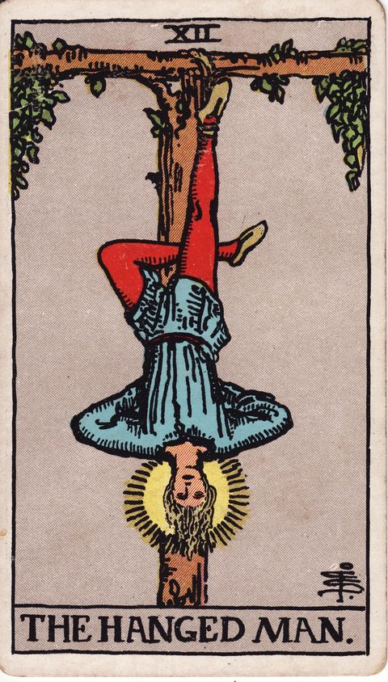

吊るされた男の意味
The Hanged Man

- 分類大アルカナ
- 象徴水（海王星）／数字12
- 正位置待機・視点の転換・受容
- 逆位置徒労・我慢のしすぎ・停滞
あえて動かず、視点を逆転して見えなかった真実に気づく段階です。
描かれている象徴
T字の木に片足で吊るされた男。表情は穏やかで、頭の周りには光輪があります。苦しみでなく受け入れと視点の転換を示す姿で、動かないことで得られる気づきを表す札です。
正位置の意味
- 待機
- 視点の転換
- 受容
今は動かず視点を変えることで、隠れていた答えが見えます。
進めやすさ：2 / 5（いまは整える・見直すが先）
- 見落としていること
- 今の状況を、真逆の立場から見たらどう見えるでしょうか。
- 進むときの注意点
- 待つ期間を決めないと、受け身のまま時間だけが過ぎます。
- 本音（本当はどうしたい？）
- 何かを手放してでも、見てみたい景色はありますか。
- 手放してよいこと
- 「動かなければ価値がない」という焦りは、もう卒業してよさそうです。
- 決め手になる違い
- 動かず、考え方を変えるだけで解ける方を基準にすると、答えが見えてきます。
逆位置の意味
- 徒労
- 我慢のしすぎ
- 停滞
意味のない犠牲や先延ばしになっていないか、見直す時です。
進めやすさ：2 / 5（いまは整える・見直すが先）
- 見落としていること
- 我慢が美徳になっていて、誰のためにもなっていないのでは。
- 進むときの注意点
- 無意味な犠牲を続けず、期限を決めて見直しましょう。
- 本音（本当はどうしたい？）
- 本当は動きたいのに、理由をつけて止まっていませんか。
- 手放してよいこと
- 「耐えることが正しい」という思い込みを、疑ってみましょう。
- 決め手になる違い
- 我慢を続けなくて済む、負担の少ない方を選ぶと軽くなります。
決断・迷いにおけるヒント
決断の場面での読み方
吊るされた男は、逆さまに吊られながらも穏やかな表情を浮かべる、不思議な札です。決断の場面では、今は動くより視点を変えて状況を見直す時期だと示しています。行き詰まりを感じたら、相手の立場や五年後の自分の目線から、同じ問題を眺めてみてください。進めない時間は無駄ではなく、見えなかった選択肢に気づくための準備期間になり得ます。
よくある迷いとの向き合い方
努力しても状況が動かず、待つべきか動くべきか迷っているときに出やすいカードです。正位置なら、焦らず受け入れることで後の展開が良くなります。ただし逆位置では、意味のない我慢を続けているだけの可能性も。待つ理由と期限を明確にし、それを過ぎたら方針を見直すと決めておきましょう。
決断前に自分に問いかけたいこと
動けない時間を、無駄ではなく見方を変える期間として使えているか。逆さまの視点から見ると、問題はどう見えるか。何かを手放すことで、得られるものがないか。急ぐ理由は本当にあるか。
「進めやすさ」は、その選択肢を「いま進める」ときの追い風の強さ。運勢の良し悪しではない。